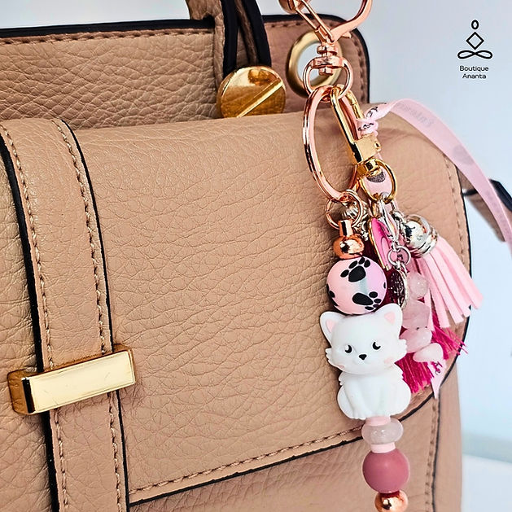
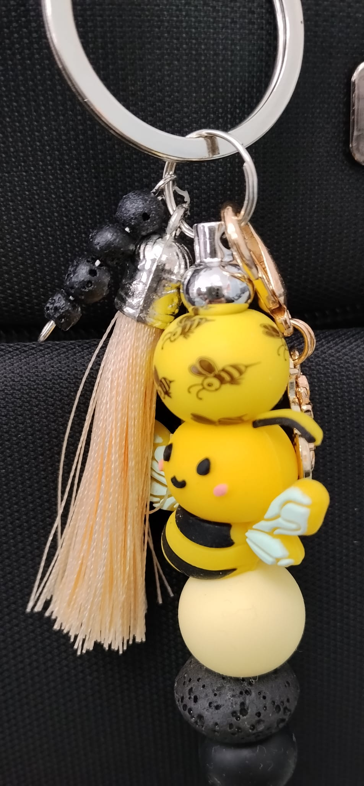
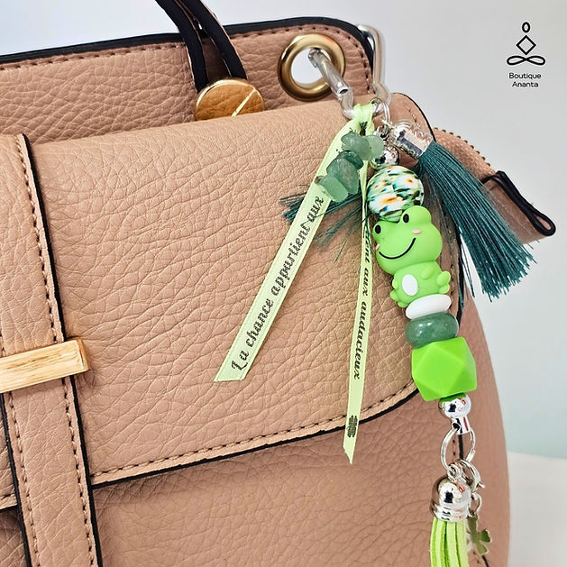
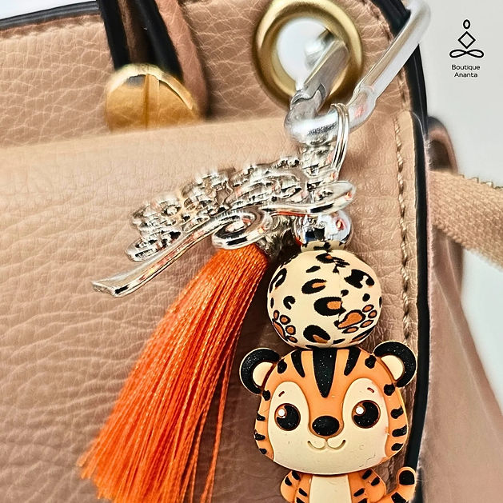
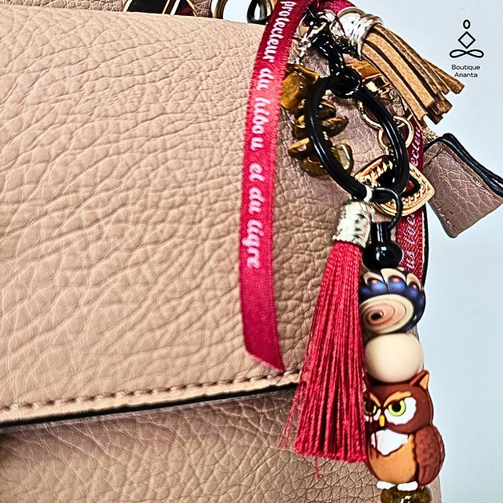
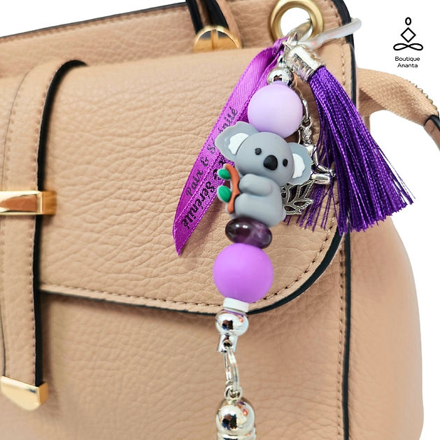
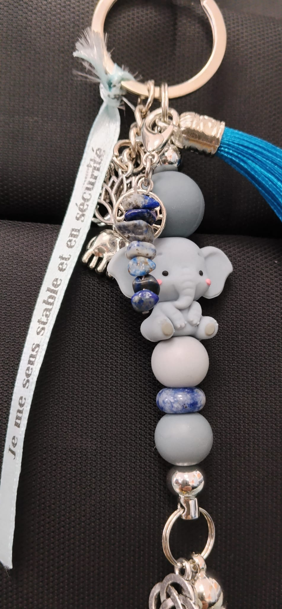
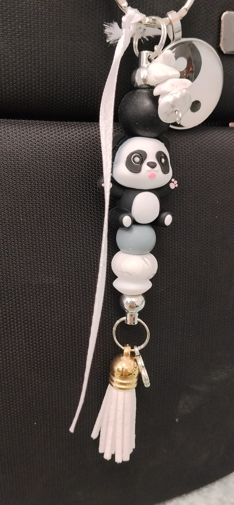

Le chat avec sa douceur naturelle et ses câlins réconfortants...
Le quartz rose, pierre de l'amour universel...
Ce grigri est là pour t'accompagner chaque jour...
Porte-le ou offre-le...
Les Poutchou ce sont des petits grigris porte-bonheur. Ils sont imaginés pour glisser un peu de magie, de douceur et de poésie dans le quotidien, fabriqués à la main.

Chat + Quartz rose
Le chat avec sa douceur naturelle et ses câlins réconfortants...
Le quartz rose, pierre de l'amour universel...
Ce grigri est là pour t'accompagner chaque jour...
Porte-le ou offre-le...
Entoure toi de tendresse
9€

Abeille + Pierre de lave
L'abeille, symbole de persévérance et de coopération, nous rappelle que les plus beaux projets se construisent avec patience et engagement.
La pierre de lave, née du cœur de la Terre, apporte ancrage et stabilité. Elle aide à avancer pas à pas, avec constance, tout en restant bien connectée à ses intentions.
Ce grigri t'accompagne comme un soutien discret, pour te rappeler que chaque effort compte et que ce que tu nourris avec attention finit toujours par grandir.
Porte-le comme un petit rappel quotidien que chaque geste compte et que la persévérance transforme les rêves en réalité.
Ce que tu nourris grandit.
9€

Grenouille + Aventurine
La grenouille, symbole de transformation et de renouveau, est depuis longtemps associée à la prospérité et aux petits coups de pouce du destin.
L'aventurine verte, pierre de chance et d'opportunités, ouvre la voie aux nouvelles possibilités et attire les énergies positives.
Ce grigri t'accompagne comme un talisman, pour te rappeler que chaque jour peut être une belle occasion de saisir ta chance.
Ose avancer, faire confiance à la vie et accueillir les opportunités qui se présentent à toi.
La chance appartient aux audacieux.
9€

Tigre + Cornaline
Le tigre, avec son assurance naturelle et son pas assuré, incarne la confiance tranquille de celui qui connaît sa valeur. Il ne cherche pas à dominer, mais avance avec dignité et certitude.
La cornaline, pierre de vitalité et de motivation, réveille la confiance en soi et aide à dépasser les doutes. Elle encourage à affirmer sa voix, à oser prendre sa place et à se sentir légitime dans ses choix.
Ce grigri est ton allié pour te rappeler chaque jour que tu as en toi toutes les ressources nécessaires.
Il t'accompagne comme un soutien bienveillant, pour marcher avec confiance sur ton chemin et avancer avec détermination.
Crois en toi !
9€

Hibou + Œil de tigre
Le hibou, veilleur de la nuit, voit dans l'ombre ce que d'autres ignorent. Symbole de vigilance et de clairvoyance, il protège en silence, toujours présent pour guider et prévenir des dangers cachés.
L'œil de tigre, pierre de protection par excellence, agit comme un bouclier énergétique qui éloigne les influences négatives. Il renforce l'ancrage et la confiance intérieure, permettant de se sentir stable et en sécurité.
Réunis, le hibou et l'œil de tigre forment une double protection : la vision qui éclaire et la force qui défend.
Ce grigri est un gardien discret, qui veille sur toi et t'enveloppe d'une énergie rassurante à chaque instant.
Sous l'œil protecteur du hibou et du tigre.
9€

Koala + Améthyste
Le koala, symbole de repos et de tranquillité, nous invite à ralentir et à savourer le calme du moment présent. Il nous rappelle que la paix ne se trouve pas dans le tumulte extérieur, mais dans la sérénité que l'on cultive en soi.
L'améthyste, pierre de sagesse et d'apaisement, calme les pensées, favorise le sommeil et aide à relâcher les tensions du quotidien. Elle ouvre l'esprit à la clarté et au recul, pour retrouver un équilibre intérieur durable.
Ce grigri est une douce invitation à te recentrer, à respirer profondément et à t'accorder des instants de véritable tranquillité.
Garde-le près de toi comme un rappel que la paix est toujours à portée de main, même au cœur des journées les plus agitées.
Retrouve la paix et la sérénité.
9€

Éléphant + Sodalite
L'éléphant est depuis toujours un symbole de sagesse, de stabilité et de protection. Par sa présence calme et rassurante, il incarne la force tranquille, celle qui ne vacille pas face aux épreuves et avance avec confiance et constance.
La sodalite, pierre d'apaisement mental et de clarté intérieure, aide à calmer les pensées envahissantes, à structurer l'esprit et à renforcer le sentiment de sécurité émotionnelle.
Elle favorise une stabilité intérieure durable, particulièrement précieuse lorsque l'on se sent dépassé ou en quête d'équilibre.
Ainsi, ce Poutchou est profondément rassurant, pensé comme un soutien au quotidien, une invitation à ralentir, à respirer.
À garder près de toi comme un repère, un talisman discret qui t'accompagne et te rappelle que tu peux avancer avec calme, solidité et confiance.
Je me sens stable et en sécurité.
9€

Panda + Howlite
Le Poutchou Panda "BAMBOU" est un grigri pensé comme une invitation à ralentir et à retrouver l'harmonie intérieure.
Le panda, symbole de paix et d'équilibre, nous enseigne l'art de vivre dans la douceur et la simplicité. Il incarne le calme, la bienveillance et la capacité à trouver l'équilibre entre les contraires, sans effort ni agitation.
Associée à la howlite, pierre d'apaisement et de sérénité, ce Poutchou t'aide à calmer le mental, à relâcher les tensions et à retrouver une clarté intérieure.
Le yin et le yang viennent rappeler l'équilibre naturel de la vie : l'harmonie née de l'union des opposés.
Ce Poutchou t'accompagne comme un rappel doux et rassurant : la paix se cultive à l'intérieur, un instant après l'autre.
L'équilibre commence en toi.
9€